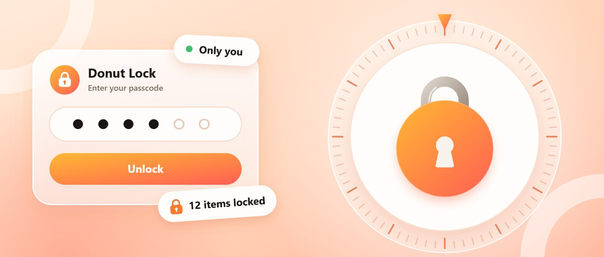

Files and folders
Keep documents, photos, executables, and other file types in encrypted vault copies. Folders are packaged and restored when opened.
A private vault for Windows & macOS
Add copies of files or folders to an encrypted vault, then unlock them with a password or your device’s biometric sign-in when available.

Private by design
Donut Lock is built around a simple vault workflow: choose the items you want to keep private, protect them, and unlock them when you need them.
Keep documents, photos, executables, and other file types in encrypted vault copies. Folders are packaged and restored when opened.
Choose Touch ID on supported Macs or Windows Hello on supported PCs. If biometrics aren’t configured, Donut Lock suggests where to set them up.
Set a password with at least 4 characters. Use letters, numbers, or symbols, and keep password unlock available as your fallback.
Downloads
One private vault, made for your computer.
The early Mac build isn’t signed or notarized. Gatekeeper may ask you to approve it in Privacy & Security.
Good to know
No. The current app protects copies opened through its vault. It does not intercept other apps’ open actions, and the original item stays where it is. Move sensitive originals yourself after confirming the vault copy works.
Donut Lock creates a temporary decrypted copy and opens it with the default app. Remove that temporary copy after you finish.
Yes. Password unlock is available on both platforms. If fingerprint sign-in isn’t configured, the app points you to the platform’s setup settings.